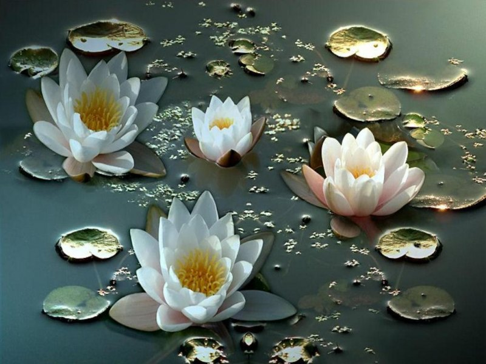
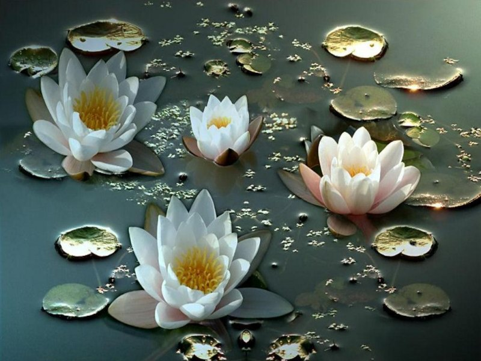
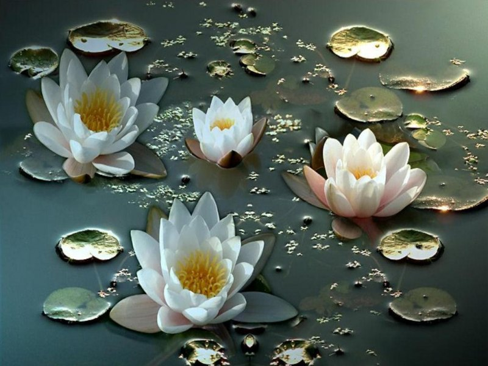
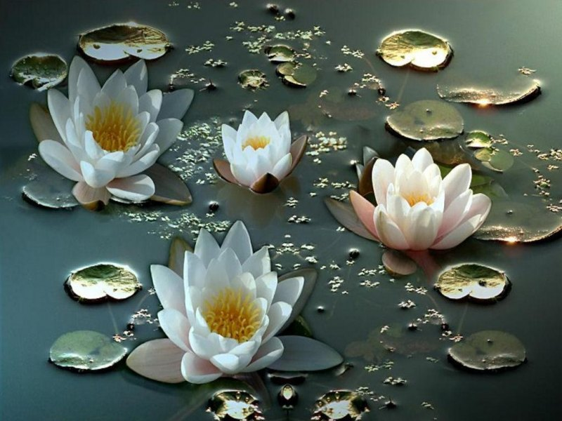

 

Cei care au gusturi mai rafinate pot încerca heringul de Dunăre, crochete de morun sau nisetru prăjit, care pot fi însoţite de savuroasele vinuri locale Aligote, Muscat sau Merlot, în restaurantele din Tulcea sau Sulina. Acest ţinut sălbatic al apelor va face sa descoperiţi multe lucruri uimitoare. O excursie în Deltă va rămâne o amintire de neuitat din toate punctele de vedere.
Ca vizitator, puteţi explora cu barca acest uimitor refugiu natural de o linişte si un calm deplin, aceasta experienţa făcându-vă să vă imaginaţi ca aţi pătruns într-adevar în paginile unui  reportaj din revista Naţional Geographic
reportaj din revista Naţional Geographic
Între aceste doua puncte se pot face croaziere, în timpul cărora turiştii pot admira, de pe confortabilele punţi ale vaporaşelor, flora, fauna si satele Deltei.